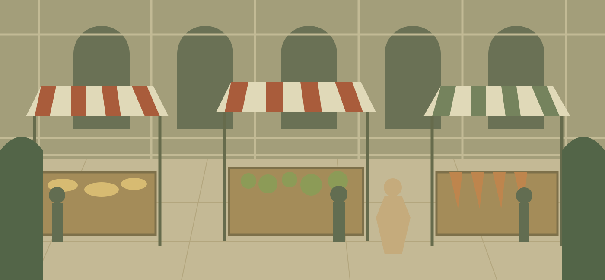

Abbey Square Market

A fictional community market. Original illustrations and sample trader information.
This Saturday
Priory Street parking.
Four minutes on foot.
Check current charges before travel.
A good place
to spend a Saturday.
Twenty four stalls. Hover, focus or tap one to see who's in it this week.
Made nearby.
Worth getting up for.
No traders found.
Try a different search or reset the index.
Leave room
for something good.
Tap a stall to add an example item. Your list stays in this tab, not on a server.
Your shopping list is empty.
This is a planning list, not a cart checkout. Stock, prices and trader attendance need confirmation on the day.
The plums are finished and the first proper squash has arrived on Marlow Hill's stall, which means autumn whatever the weather says.
Cross Oak has doubled the rye. Knife and Steel takes about fifteen minutes a blade, so hand it in early and shop while you wait.
Marta Reeve, market manager
Illustrative seasonal dispatch, not a live attendance or stock update. The brief's Fish Van absence on the 10th is historical example copy and does not determine this sample schedule.
Original produce studies, not trader photographs.
There might be
a place for you.
What it costs.
£32 for a three-metre pitch. £48 for six metres. Example fees, paid on the day.
What you need.
Public liability insurance, applicable council food registration, your gazebo and weights.
How to apply.
Tell us what you make and where. A real application would include two photographs.
When you'll hear.
Proposed response within two weeks. Cheese, bread and vegetables have example waiting lists.
“I have bought the same bread from the same man for eleven years and we have never once talked about anything but the weather.”
Getting here.
Priory Street car park, four minutes on foot.
Bridge Street car park, seven minutes on foot.
The brief lists buses 553 and 382 to High Street, two minutes away. Check current routes and parking charges before travel.
Example dog policy: welcome except at the hot food stall. Please confirm current venue arrangements.
Fictional market concept; travel information is not verified.